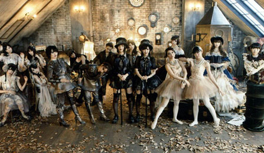

SNH48“一心向前”演唱会暨第一届总选举开票日将是SNH48暑假演出期间最大的一场盛会
SNH48第一届总选举真的来了！
2014年7月26日，SNH48《一心向前》上海演唱会暨第一届总选举发布会将在上海长宁国际体操中心上演，粉亲们翘首以盼的SNH48第一届偶像年度总选举最终结果也将于现场公布。SNH48首届年度总选举以“一心向前”为主题，旨在通过总选活动传达SNH48努力拼搏、奋发向上的决心，以青春活力的献演，向粉亲们和社会公众传播“中国正能量”。届时，现场数千观众将亲眼见证这一SNH48成立以来最具历史意义的时刻！SNH48三期生也将于当晚首次亮相并登台，与所有S队和N队成员一起，共同踏上梦想之路！
SNH48将在现场演艺自组合成军以来最热门歌曲及
全新四首
48G顶尖人气歌曲

40名SNH48正式成员
倾力奉献演出时间达三小时以上
倾力奉献演出时间达三小时以上
热情、感动、汗水、泪水这一刻SNH48与你在一起
前十六名成员将前往韩国拍摄
此次“一心向前”SNH48第一届总选举的选拔组成员，将赴韩国拍摄冠军单《UZA》，此次拍摄已确认由韩国顶级影视制作公司ZANYBROS进行拍摄，并由少女时代、SUPER JUNIOR、F（x）、T-ara、INFINITE等国际知名组合御用MV导演洪元基亲自掌镜拍摄。
- 
重大发表
持续发酵四个多月的SNH48三期生招募，也一直牵动着粉亲们的心，并引发社会关注。据悉，戴着神秘面纱的三期生成员将在演唱会当日首度揭秘并登台亮相。为此，主办方精心准备了SNH48三期生登台发布环节，为营造具有冲击力的视觉效果，舞台中央的LED大屏幕介时将变身巨型蛋糕。而三期生成员的登台亮相，将上演国内首见的近80名青春偶像少女同台献唱的盛况,其立体视觉效果将极为令人震撼。